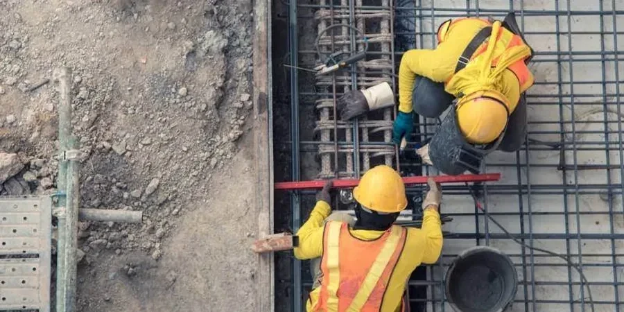

Our Fremont office delivers comprehensive geotechnical engineering services tailored to the unique conditions of the Bay Area. From initial site characterization and subsurface investigation to foundation design, slope stability analysis, and construction monitoring, we provide integrated solutions that ensure safe, code-compliant, and cost-effective project delivery. With a deep understanding of local geology and regulatory requirements, we help clients navigate complex ground conditions for residential, commercial, and infrastructure projects. Our team combines advanced field testing, calibrated laboratory equipment, and proven analytical methods to support every phase of development. Learn more about our approach to retaining wall design and geotechnical slope monitoring as part of our full-service offering.

Technical reference image — Fremont
Method and coverage
Fremont is situated in the eastern San Francisco Bay Area, underlain by a complex sequence of Quaternary alluvial deposits, older Pleistocene terrace materials, and bedrock of the Franciscan Complex. The alluvial fans and floodplains of Alameda Creek and Coyote Creek consist of interbedded silty clays, sandy clays, and gravelly sands, often exhibiting high plasticity and variable compressibility. Groundwater is typically shallow, ranging from 5 to 20 feet below ground surface, and is influenced by seasonal recharge and tidal fluctuations near the bay. Seismic hazards are a primary concern due to proximity to the Hayward Fault and Calaveras Fault, with potential for strong ground shaking, liquefaction in loose saturated sands, and lateral spreading along creek corridors. Older terrace deposits, while more competent, may contain stiff to hard clays and dense sands that require careful evaluation for foundation support. Understanding these conditions is critical for designing solid foundations and earth retention systems, such as those detailed in our sheet pile wall design guidance.
Regional considerations
Our firm brings consolidated regional experience to Fremont, having completed numerous projects across Alameda County’s varied geologic settings. We operate a calibrated laboratory for index and strength testing, ensuring data reliability. Our engineers maintain close coordination with local building departments, geotechnical review boards, and specialty contractors, facilitating smooth permit approvals and construction. We stay current with evolving CBC amendments and seismic design criteria, delivering code-compliant reports that address site-specific hazards. This local knowledge, combined with rigorous quality control, makes us a trusted partner for developers, architects, and public agencies.
All geotechnical investigations and designs in Fremont follow U.S. standards including ASTM D1586 (Standard Penetration Test), ASTM D2487 (Unified Soil Classification), and ASTM D422 (Particle-Size Analysis). Seismic design parameters are derived from ASCE 7-22 and the California Building Code (CBC 2022), referencing site-specific response spectra per ASCE/SEI 41-17. Foundation recommendations comply with ACI 318-19 and IBC 2021, while slope stability analyses follow USGS seismic hazard maps and FHWA guidelines for transportation projects.
FAQ
What are the most common soil conditions found in Fremont?
Fremont’s subsurface typically consists of interbedded alluvial clays, silts, and sands, with occasional gravel layers. Near creeks and the bay, soft to medium stiff clays and loose sands are common, while older terrace deposits yield stiffer clays and dense sands. Groundwater is often shallow, requiring dewatering considerations for excavations. A thorough site investigation with borings and SPT is essential to characterize variability.
How does the proximity to the Hayward Fault affect foundation design in Fremont?
The Hayward Fault is capable of producing magnitude 7.0+ earthquakes, necessitating rigorous seismic analysis. ASCE 7-22 requires site-specific response spectra, and CBC mandates evaluation of liquefaction, lateral spreading, and fault rupture hazards. Foundations must be designed for peak ground accelerations often exceeding 0.6g, with deep foundations or Improvement recommended in liquefiable zones.
What permits or approvals are needed for geotechnical work in Fremont?
Geotechnical reports must be submitted with building permit applications and reviewed by the City of Fremont Building Department. Reports must comply with CBC 2022 and include site-specific seismic parameters, soil bearing capacity, and recommendations for foundations, slabs, and retaining walls. For projects in Alameda County floodplains, additional drainage and erosion control permits may be required.
What types of projects commonly require geotechnical investigations in Fremont?
Typical projects include single-family homes, multi-story residential buildings, commercial developments, school expansions, and public infrastructure like bridges and retaining walls. Due to variable soils and seismic risk, even small additions often require soil testing. Landslide-prone hillside areas and creek-adjacent sites demand specialized slope stability and drainage studies.